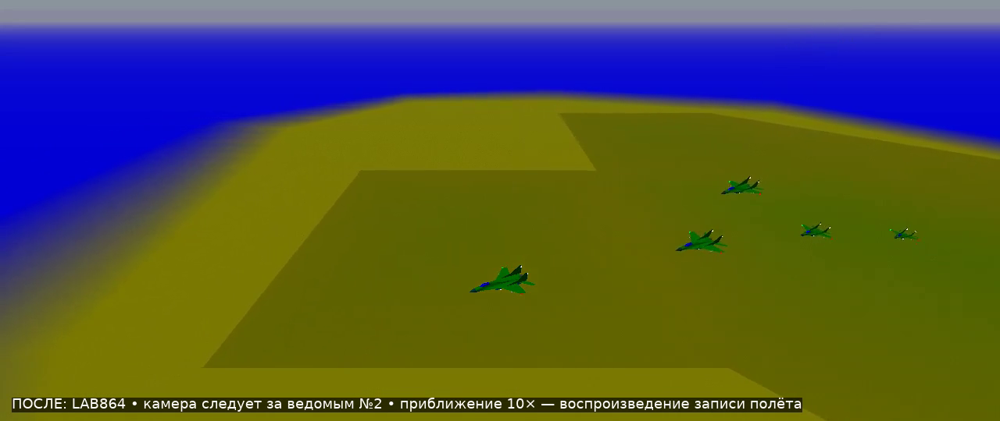
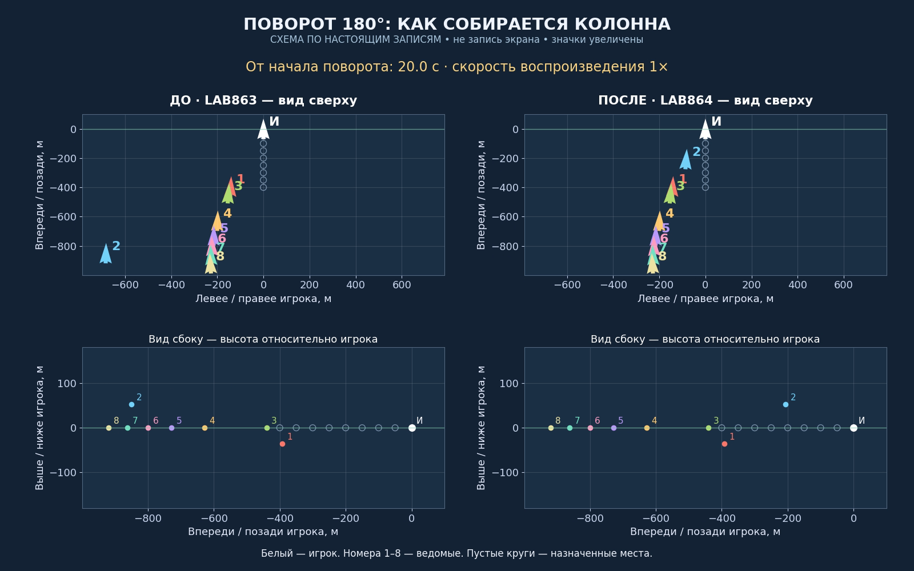
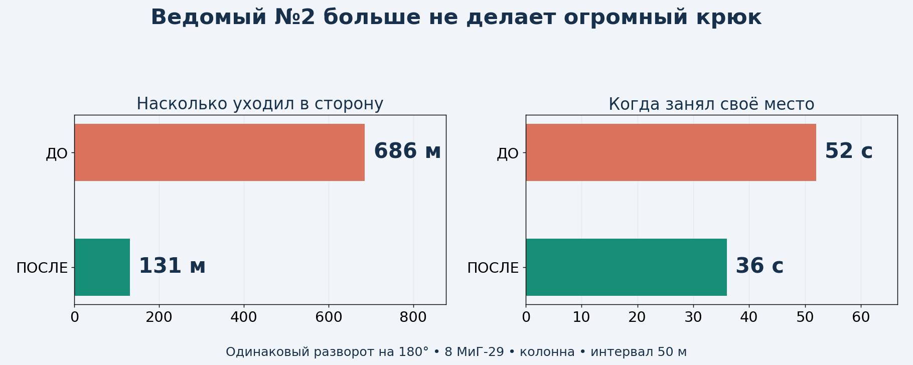
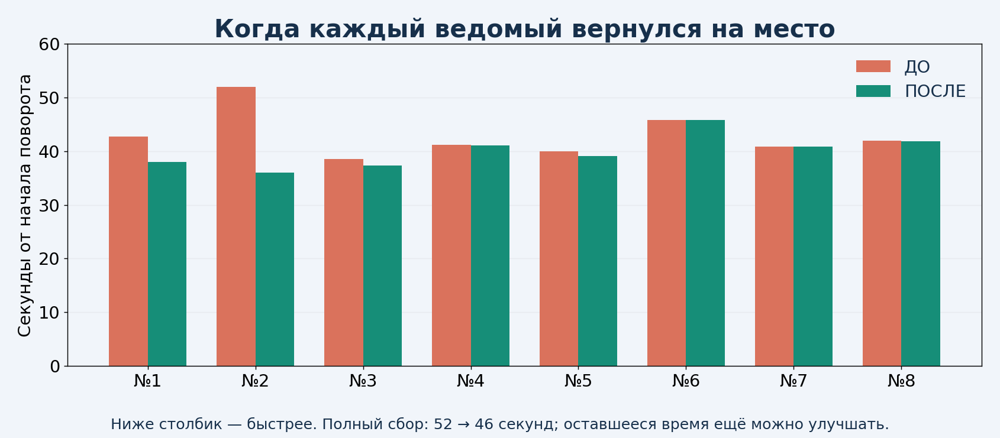

Тестовая копия для просмотра. Рабочая v8.6.2 сохранена; это ещё не установочное обновление игры.
Первые два ролика — настоящие записи полётов, воспроизведённые движком YSFlight. Камера следует за ведомым №2 с расстояния 90 м вместо прежних 900 м. Она показывает его крупнее; часть группы может выходить из кадра. Третий ролик — схема по настоящим измерениям, с увеличенными значками и номерами, а не запись экрана. Во всех сравнениях ДО — предыдущая LAB863, ПОСЛЕ — новая LAB864.



Ведомый №2 уходил вбок на 686 м, теперь — на 131 м в том же полёте. Это боковое смещение относительно курса игрока, а не общий пройденный путь. На своё место он вернулся за 36 с вместо 52 с. Секунды считаются от начала разворота ведущего.
Причина: при активном защитном уходе по высоте код ограничивал крен истребителя до 45°. В таком режиме ведомый описывал слишком широкую дугу. Отдельный контрольный опыт с пределом 65° уменьшил задержку, но всё ещё оставлял большой обход. В выбранном варианте для узкой колонны этот особый предел поднят до штатных 75°. Если в группе есть боковые позиции, сохранён прежний запас для ухода по высоте; физические ограничения по подъёмной силе, скорости и перегрузке продолжают уменьшать разрешённый крен при необходимости. Самолёт не получает мгновенного разворота или новой физики.
Защита от непосредственного сближения и земли сохранена. При близком пересечении траекторий отдельное ограничение крена до 45°/60° всё ещё действует. Защитные высоты и проверка свободного коридора возвращения сохранены. Более ранний спуск при любом расстоянии был проверен отдельным опытом и отклонён: он ухудшал траекторию. Распространение предела 75° на все строи тоже отклонено: во «фронте пар» оно давало слишком близкое сближение, хотя потерь в тех полётах не было.

Полный сбор после 180°: 52.0 → 45.8 с. После 90°: 27.3 → 27.3 с. Исправление убрало конкретный большой обход; оно не делает сбор всей группы мгновенным. Некоторым ведомым ещё нужно больше времени для восстановления высоты.
94 проверочных полётов выбранного варианта прошли. Сценарии включают 1–8 ведомых, повороты на 90°/180°, все 10 строёв с восемью ведомыми, повторные смены курса, малую высоту, F/A-18, разлёт и возврат, прикрытие, потери, паузу и отставший самолёт в разных местах колонны. Добавлены поворот в другую сторону, набор и снижение одновременно с разворотом.
В основных автоматических полётах физика считалась самой игрой с шагом 0,025 с, измерения записывались примерно через 0,075 с. Пауза и продолжение проверялись также в обычном цикле игры. Место считается занятым при ошибке меньше 15 м, сохраняющейся до конца записи не менее двух секунд. Проверки преимущественно выполнены на МиГ-29 с интервалом 50 м; они не доказывают отсутствие столкновений при любых возможных сочетаниях моделей, интервалов и действий игрока.
При подготовке видео обнаружен выход за конец списка событий при перемотке. Добавлена проверка границы: пустой список и момент после последнего события больше не вызывают такое чтение. Точная функция проверена на 45 сочетаниях событий и времени: прежний код отклонён, исправленный прошёл. После этой отдельной правки повторены три контрольных полёта: колонна, фронт пар и отставший ведомый. Основные 91 полёт выполнялись до правки перемотки; код управления ведомыми между этими сборками не менялся. Оба видео воспроизводятся сборкой с исправленной перемоткой.
Посмотри приближённое видео ПОСЛЕ и сравнение с номерами. После твоей оценки можно собирать игровое обновление для Windows 10 32 бит, запускаемое двойным щелчком по EXE. Текущие проверки выполнялись на лабораторной 64-битной сборке под Wine; её нельзя выдавать за проверенный установочный выпуск для твоего компьютера.
Технические материалы для сохранения проекта: исходники и сценарии проверок, подробные замеры и записи. Это материалы разработки; для просмотра достаточно видео и картинок выше.
Технический отпечаток проверенного файла: 2470b26d5a07ca804ac51ddd7a191370386bf000b07944fef2b19e436b53f2af. Итоги и замеры приложены в JSON; для просмотра они не нужны.